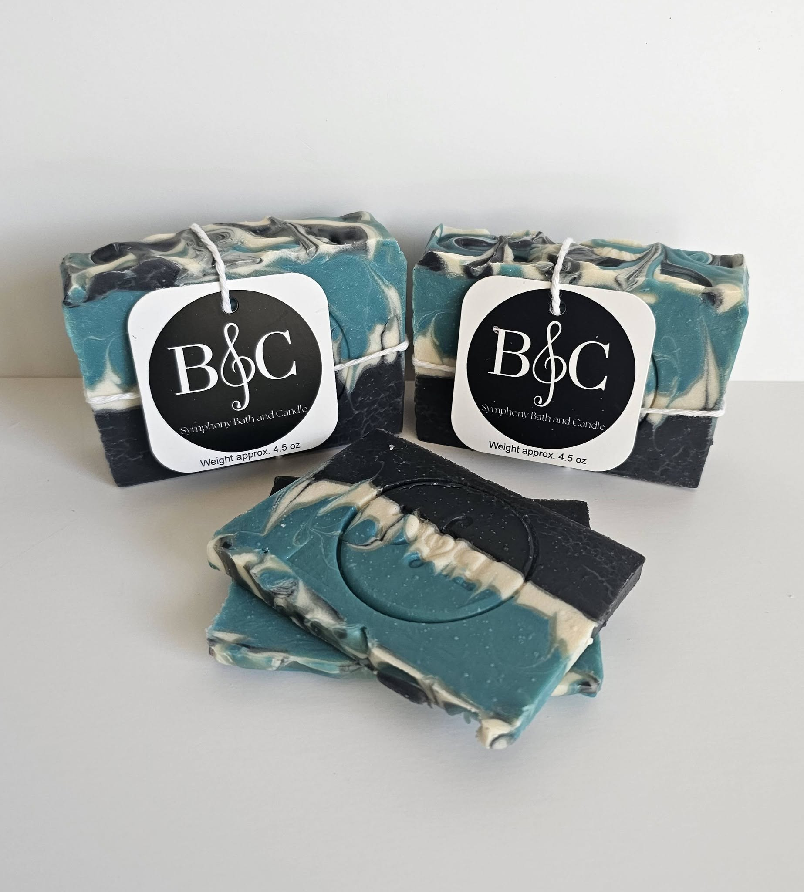
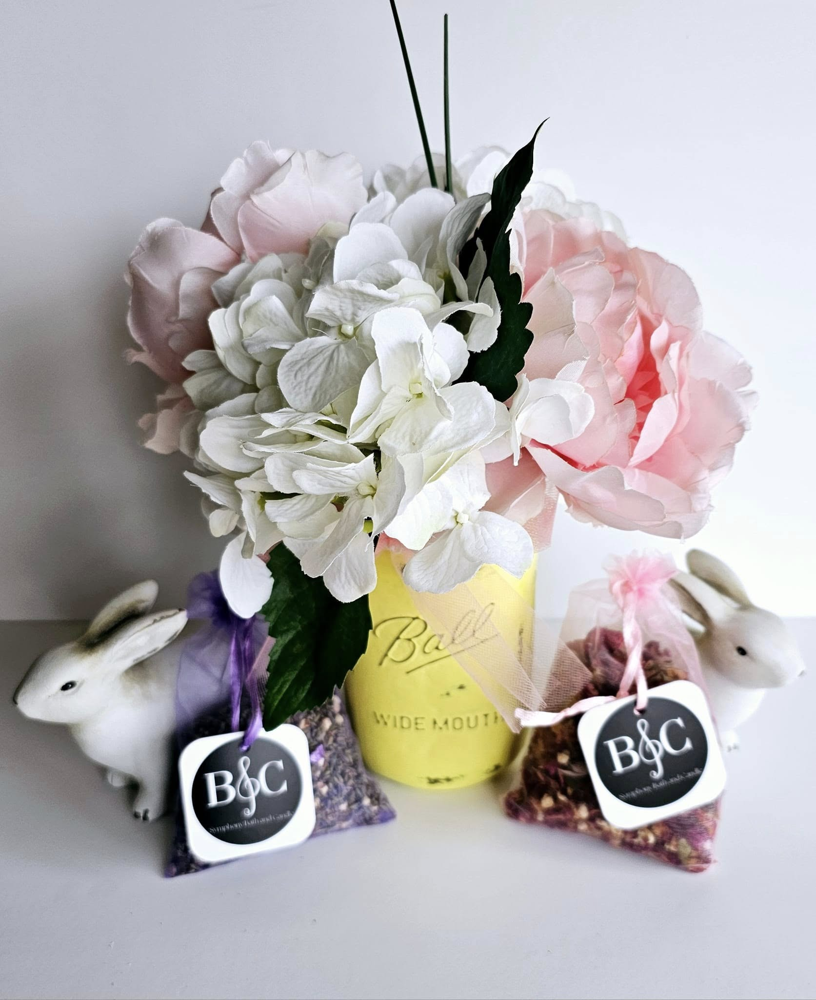

Concept 01 / Editorial boutiqueExplore design ↗
Original Atelier
The original warm editorial storefront, now preserved as concept one.

Ten individually designed storefront experiences using Symphony Bath & Candle's existing visual archive. Explore, filter, search, open photo details, and compare layouts before selecting a Shopify direction.
The original warm editorial storefront, now preserved as concept one.
A darker editorial boutique with gold detailing, generous rhythm, and gallery-led storytelling.
Soft botanical hues, tactile product imagery, and clean category browsing.

Minimal product-first layouts inspired by contemporary apothecaries.

Romantic serif typography, softened edges, and art-directed editorial modules.

Art-gallery-inspired framing, asymmetric compositions, and immersive photography.

Cheerful shapes, big type, and a lively browse experience for gifting.

Balanced layouts and calming sea-glass tones without unverified wellness claims.
Warm heritage tones, craft notes, and an intimate artisan narrative.
A contemporary monochrome system built around strong photography and typography.